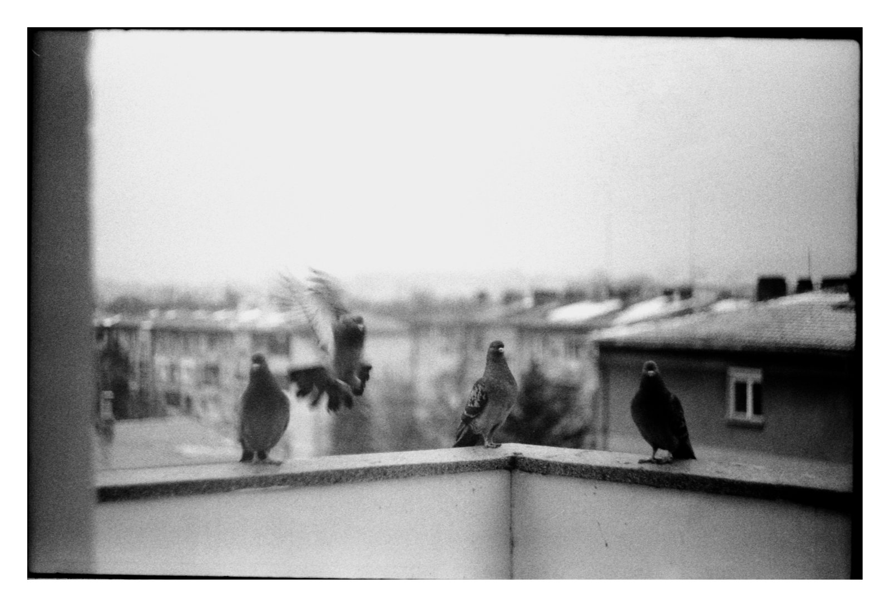
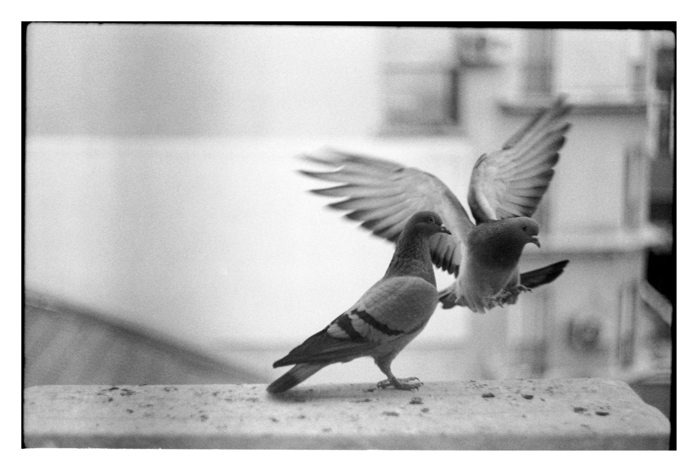

Какво представлява Columbidae
Columbidae е семейство птици, което включва всички гълъби и гургулици.
Основни особености
- Компактно тяло и малка глава
- Къс врат и силни гърди
- Къс клюн с меко восъчно покритие
- Силни крила и бърз полет

Размножаване
Гълъбите образуват дълготрайни двойки и снасят 1–2 яйца.
